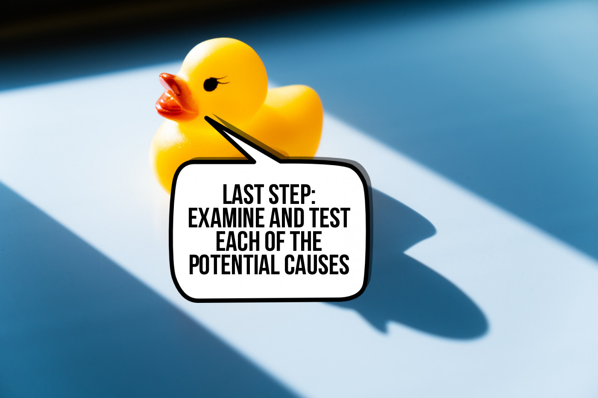

Rubber Duck Debugging

Step 3: Examine
Now that you have a list of many possible ways that your code could be broken, your job is to go through all of them one by one, and do your best to rule them out. Try to devise specialised tests to specifically target the possible cause of the error. If the test fails, you have found the problem with your code, and can proceed to fix it! If your code passes the test, move on to the next possible problem. Proceed in this fashion until you have ruled in or ruled out every single possible issue that you came up with before.